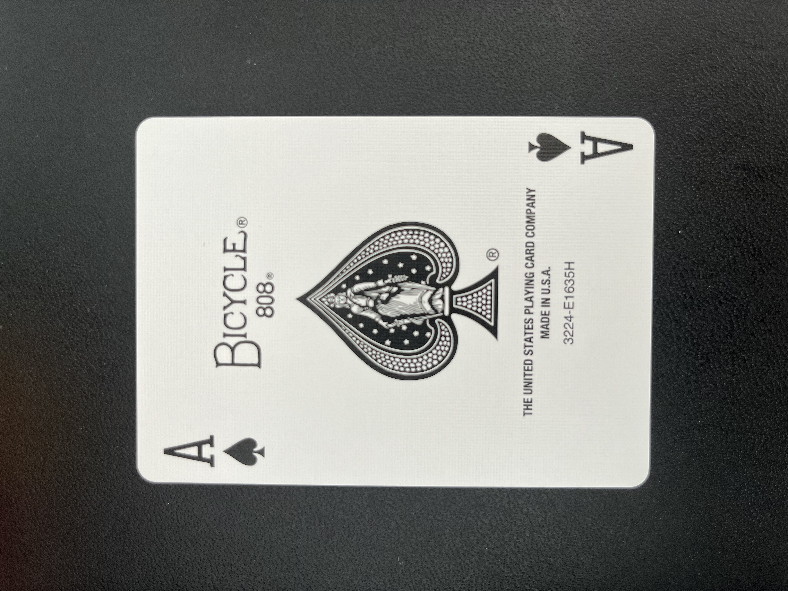
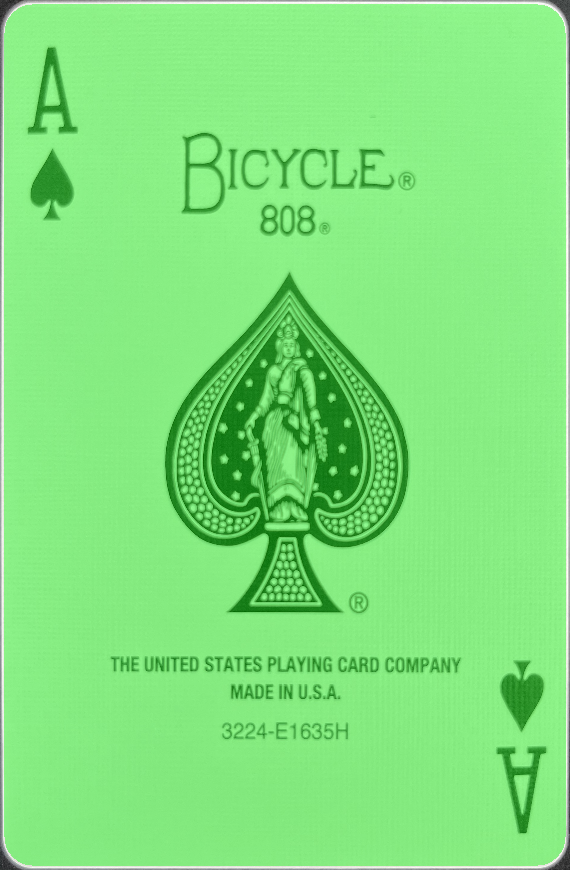
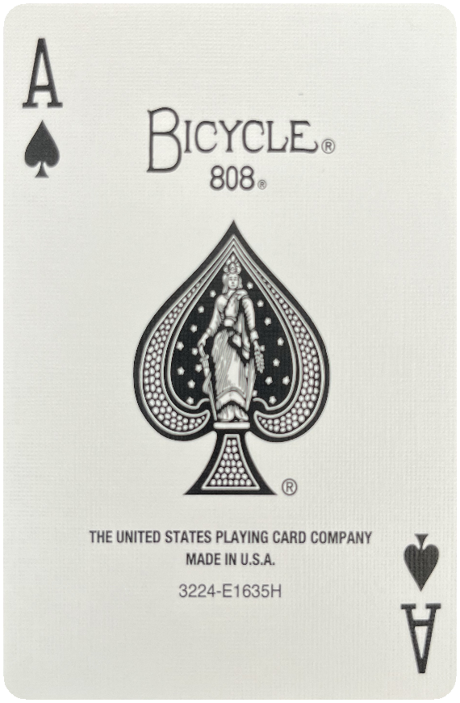
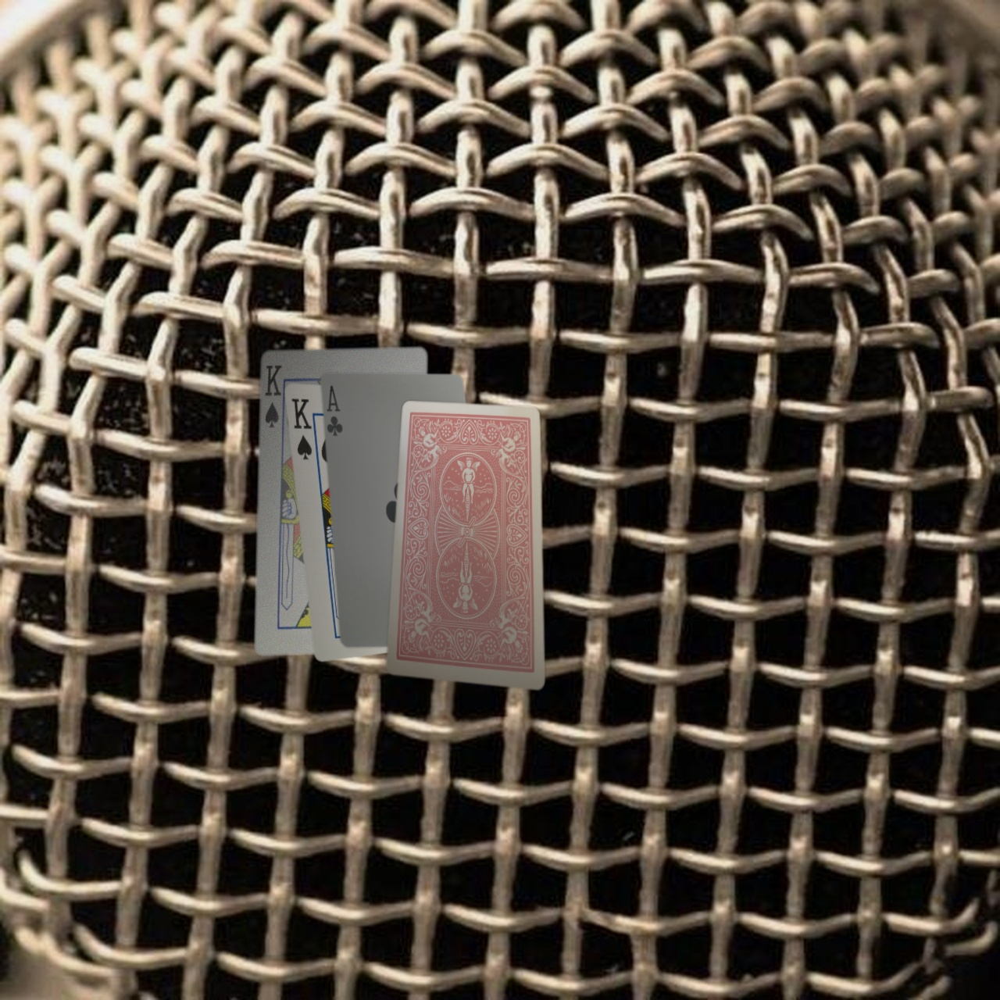

Real-time computer vision and synthetic data pipeline for multi-deck card tracking.




To develop a robust computer vision system capable of identifying playing cards under heavy occlusion and varied lighting, ultimately providing real-time Expected Value (EV) calculations for Blackjack.
This pipeline isolates individual cards from a raw dataset to create standardized digital assets. By converting physical cards into high-fidelity "canonical" views, I established a clean foundation for the synthetic generation stage.
To isolate the card from a dark background, I implemented Otsu’s Binarization. This method automatically calculates the optimal pixel intensity threshold, resulting in a boundary significantly smoother than a standard Canny contour processed via approxPolyDP.
Rather than relying on noisy contour corners, the pipeline samples points along the four edges and fits mathematical lines using Linear Regression (L2 Distance). The true corners are found by calculating the intersections of these four lines, allowing the system to find perfect corners even if the physical card is rounded or damaged.
Using the four calculated corners, I applied a Homography Matrix to "un-warp" the image. This transforms the tilted perspective of the photo into a flat, top-down view with a standardized aspect ratio.
To train a model for real-world casino environments, I built a pipeline to produce realistic scenes with accurate segmentation labels under heavy occlusion and perspective distortion.
Cards undergo randomized scaling, rotation, and perspective warping. To improve generalization, I applied appearance augmentations including specular glare, lighting gradients, motion blur, and HSV color jitter.
Half of the scenes are generated with high occlusion. For each card, a visible mask is computed by subtracting the masks of cards layered above it. Only visible pixels are blended into the final scene using feathered alpha blending to ensure label consistency.
Standard hobbyist projects rely on "pip" detection, but this fails in 6-deck Blackjack where identical cards frequently overlap. My objective was to build a system robust enough for professional environments.
Relying on corner pips introduces two major failures: if the pips are covered, the model loses the card; and if two identical pips are adjacent, the model cannot distinguish between one card or two stacked cards.
The current one-shot approach achieves real-time inference on M-series MacBooks. Future work involves expanding to 52 classes and implementing Pose Detection to infer corner locations under total occlusion.